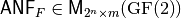

ANF table¶
Description¶
ANF table of F, denoted by , represents the  coefficients of the polynomials of each of the m coordinate functions in ANF.
coefficients of the polynomials of each of the m coordinate functions in ANF.
The ANF table of F, denoted by , is defined by  where
where  is the i-th column of .
is the i-th column of .
The ANF Table can be derived from the Truth Table by a binary matrix transformation called the Algebraic Normal Form Transformation (implemented in the VBF library with getanf method). The Truth Table can be obtained from the ANF Table using a method we call rev.
Library¶
A VBF class can be initialized giving its ANF table with the following method:
void putanf(const NTL::mat_GF2& A)
To obtain its representation as ANF table, the following method must be used:
void ANF(NTL::mat_GF2& X, VBF& F)
Example¶
The following program provides the ANF Table of a Vector Boolean function from its Truth Table.
#include <iostream>
#include <fstream>
#include "VBF.h"
int main(int argc, char *argv[])
{
using namespace VBFNS;
VBF F;
NTL::mat_GF2 T;
ifstream input(argv[1]);
if(!input) {
cerr << "Error opening " << argv[1] << endl;
return 0;
}
input >> T;
F.puttt(T);
input.close();
cout << "The ANF Table is:" << endl;
cout << ANF(F) << endl;
return 0;
}
If we use as input of this program the Truth Table of NibbleSub, the output of the program would be the following:
The ANF Table is:
[[1 1 1 0]
[1 0 1 0]
[0 0 1 1]
[0 1 1 0]
[1 1 0 0]
[0 1 1 1]
[1 0 1 0]
[1 0 0 0]
[1 1 0 1]
[0 0 1 1]
[0 1 1 0]
[0 1 0 1]
[1 0 1 0]
[0 0 1 0]
[1 0 1 0]
[0 0 0 0]
]